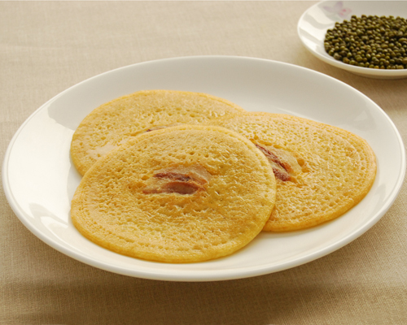
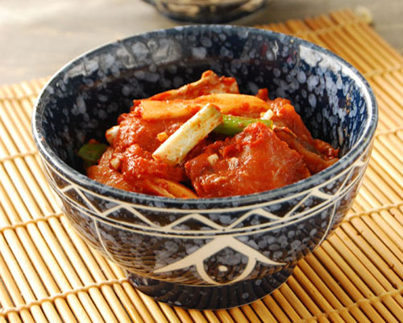
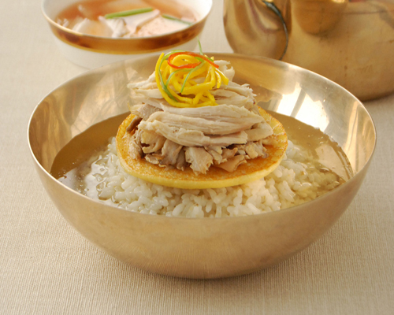
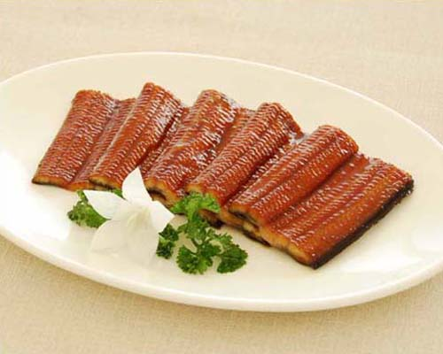
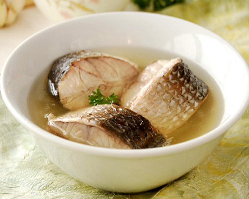

Famous Korean Dishes
Sinsollo

Famous Korean Dishes
Ogokpap

Famous Korean Dishes
Yakpap

Famous Korean Dishes
Pyongyang cold noodles

Famous Korean Dishes
Mung-bean pancake

Famous Korean Dishes
Cubed radish kimchi

Famous Korean Dishes
Beef barbecue

Famous Korean Dishes
Pork casserole

Famous Korean Dishes
Steamed chicken with insam

Famous Korean Dishes
Loach soup

Famous Korean Dishes
Kimchi

Famous Korean Dishes
Honeyed broad bellflower root

Famous Korean Dishes
Makkolli

Famous Korean Dishes
Fermented spicy Pollack

Famous Korean Dishes
Pyongyang onban

Famous Korean Dishes
Roasted turkey

Famous Korean Dishes
Winter solstice porridge

Famous Korean Dishes
Bean paste soup

Famous Korean Dishes
Mung bean jelly salad

Famous Korean Dishes
Roast eel

Famous Korean Dishes
Pine nut porridge

Famous Korean Dishes
Steamed sturgeon with soy sauce

Famous Korean Dishes
Raw mandarin fish slices

Famous Korean Dishes
Taedong River mullet soup

Famous Korean Dishes
Chicken steamed with seven flavours

Famous Korean Dishes
Steamed terrapin
Excellent Qualities of Korean Dishes
Since the dawn of human civilization the Korean nation has lived on the same territory as a homogenous nation, and they have created and developed a peculiar dietary culture.
Korean dishes that are prepared with diverse materials rich in mountains, fields, rivers and seas constitute one of valuable cultural heritage.
Kimchi, sinsollo, Pyongyang cold noodles, pulgogi, mung bean pancake and other traditional dishes conform to physical constitutions and tastes of the Korean people, so they are popular not only at home but also abroad.
Numbering several thousand items in kind, they are palatable, aromatic, and beautiful in colour and appearance. Methods of preparing them are also diverse and yet unique. Scores of dishes are prepared with one material.
Many experts say that Korean dishes fully reflect aspiration and wish of the people for long life in good health, and that they are the world models in terms of nutritive and hygienic values.
Korean dishes whose excellence is proved scientifically attract a growing number of people and show a steady improvement.
Folk Holiday Dishes


Early in the morning of the New Year’s Day, all the families would hold memorial services for their ancestors, make New Year greetings and enjoy holiday dishes.
It was a custom in Korea to put ttokguk (rice cake soup) on the table set for memorial services on New Year’s Day with several other dishes.
Dishes for this day include chalttok (glutinous rice cake), solgittok (steamed rice cake), jolphyon (fancy rice cake), pancakes, desserts, sujonggwa (fruit punch), sikhye (sweet rice drink), roast meats, fruits and others.
And ttokguk is a must dish for the day. So, Koreans called it chomsebyong, age-adding rice cake.
The soup was originally prepared with pheasant broth, and when the pheasant was not available, chicken broth was used instead. Hence the Korean proverb, Chi...For More Information


Festive dishes for the day include ogokpap, yakpap, pokssam, noodles, dried herb dishes, and ear-quickening liquor.
Ogokpap is the boiled rice mixed with four other cereals, typically foxtail millet, sorghum, bean and adzuki bean.
Yakpap, medicinal rice, is prepared with glutinous rice and honey as major ingredients, and also jujube, dried persimmon, chestnut, pine nuts, sesame oil and others.
Nine kinds of cooked dried herbs are good for not getting ill from the summer heat.
Koreans of old times favoured these dishes, because such balanced diet would help the intake of various nutrients for health promotion.
They ate noodles at lunch the day before, wishing that they would live as long as the noodle strips.
&nbs...For More Information

So they celebrated grandly the first day of the lunar February, calling it Ilgunnal, day of farm workers.
They prepared and ate songphyon (half-moon-shaped rice cake) on the day, and those in the Phyongan provincial areas (at present North and South Phyongan, and Jagang provinces) favoured solgittok (steamed rice cake).For More Information


They ate hwajon (glutinous rice cake fried with azalea and chrysanthemum flowers), hwamyon (mung bean jelly slices in honeyed water served with pine nuts), and sumyon (mung bean noodles coloured in red and served in honeyed water).
And they drank liquors named Sogukju, Tugyonju, Tohwaju and Samhaeju.For More Information


Old documents read that the people in the period of Koguryo (277 BC-AD 668), the first feudal state of Korea, had a bath in a stream east of the village and enjoyed a feast of dishes.
Typical dishes on the day include congee with fish, noodles, rice cake dumplings, fermented rice cake and pancake.For More Information


From olden times people went to summer resorts and prepared seasonable dishes.
As a proverb says, Like cures like, they ate hot tangogi soup, samgyethang, spicy beef soup, aduzuki bean congee, boiled barley rice and leek soup.
Tangogi soup is prepared with slices of well-cooked tangogi garnished with minced skin, oil, seasoning herbs, garlic, and powders of red and black peppers and served in boiling hot tangogi broth.
Samgyethang is a dish of jugged young chicken with insam, jujube, glutinous rice and other ingredients.
Spicy beef soup is prepared specially for those who find tangogi soup disagreeable.
Beef soup is usually served without hot pepper, but during the midsummer days it is served hot.For More Information

Sudan is also recommended for avoiding summer heat of the year.
An old Korean proverb says, Take sudan on the seventh day of the seventh lunar month and songphyon on chusok.For More Information


From old days the Korean people celebrated the day to commemorate the bumper harvest and to honour their ancestors.
That day people offered to their ancestors foods prepared with early rice and other grains such as mung bean, adzuki bean and soy bean.
And on the eve of the holiday, they prepared holiday dishes, typically rice cakes made of newly harvested crops, soups, wine and sweets.
They made a variety of rice cakes including glutinuous rice cake, and the one most associated with the holiday is songphyon, half-moon-shaped rice cake stuffed with beans and cooked on a layer of pine needles.For More Information


They prepared pancake, punch and liquor with chrysanthemum flowers and enjoyed the autumn-tinted scenery.For More Information

When the winter solstice occurs in the first ten days of lunar November, it is called aedongji, and when it falls afterwards, rodongji.
People said the early winter solstice was good for children while late winter solstice for old people.
It reflected the wish of children to grow up early and that of the elderly to live long, as they regarded the winter solstice as the New Year’s eve.
It was also said that the winter with early winter solstice had more biting cold.
Tongji porridge is a must on the day.For More Information


Typical dish of the day was the casserole of wild boar, hare and other game hunted on the day.
Rapil was also called rapphyong.
Ordinary people did not celebrate the day as grandly as in the royal palace, but they ate roasted sparrow and made yot (taffy).
In the Pyongyang area people ate noodles on the day.For More Information